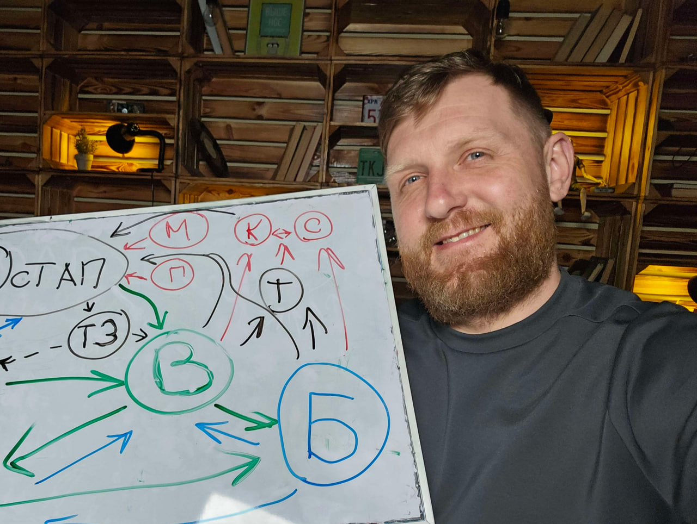

Трішки інформації про себе
Mене звуть Андрій
мені 25 років.
Освіта
Закінчив
ПНУ ім.Стефаника на
спеціальнісь фізична терапія, ерготерапія.
4 роки вже працюю фізичним терапевтом
Цікавлюся сферою IT оскільки тут є свої переваги, такі як:
- Затребуваність.
- Висока оплата праці
- Кар'єрний ріст.
- Можливість будувати кар'єру у ранньому віці
- Вільний графік та можливість віддаленої роботи.
Курси
Закінчив курси QA engineer не буду казати назву школи. Після чого зрозумів , що шукати помилки це не моє, тому почав шукати інші варіанти спеціальності. Проходив різні безкоштовні курси, та з часом настрапив на ютуб канал Фрілансер по життю і почав вивчати верстку.
Хоббі
У вільний час люблю грати в компютерні ігри
Перші враження від курсу
Дуже позитивні. цікаво і весело.
